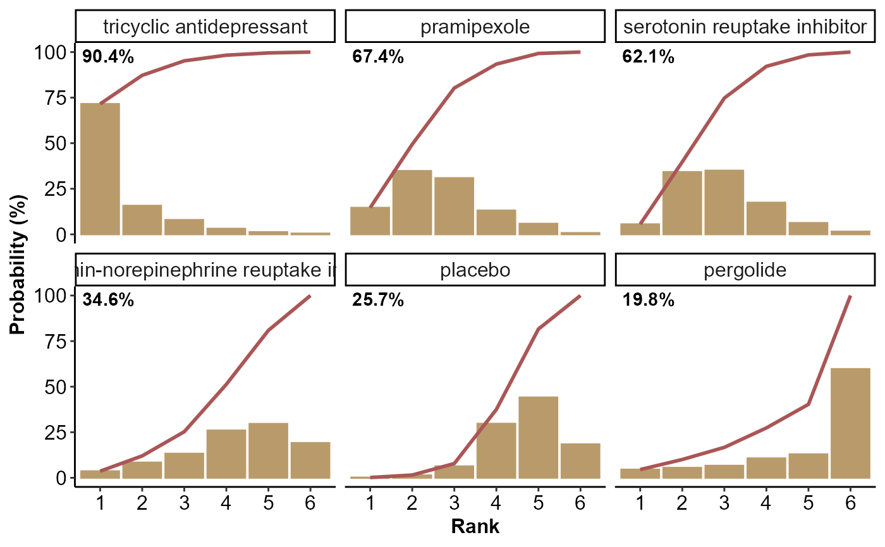

It returns a panel of rankograms with integrated SUCRA curves for each intervention in the network. The function can illustrate the results of a single or two outcomes simultaneously.
Usage
rankosucra_plot(
full1,
full2 = NULL,
drug_names1,
drug_names2 = NULL,
name1 = NULL,
name2 = NULL
)Arguments
- full1
An object of S3 class
run_modelfor network meta-analysis. See 'Value' inrun_model.- full2
An object of S3 class
run_modelfor network meta-analysis of a second outcome. See 'Value' inrun_model.- drug_names1
A vector of labels with the name of the interventions in the order they appear in the argument
dataofrun_modelforfull1.- drug_names2
A vector of labels with the name of the interventions in the order they appear in the argument
dataofrun_modelforfull2. The elements must be a subset ofdrug_names1.- name1
The text for the title of the results that refer to the outcome under
full1.- name2
The text for the title of the results that refer to the outcome under
full2.
Value
A panel of rankograms (yellowish bars) with integrated reddish SUCRA curves for each intervention in the network (Salanti et al., 2011). The x-axis of each panel refers to the ranking, and the y-axis refers to the ranking probability expressed in percentage.
Details
Interventions are sorted in the descending order of their SUCRA
value. The SUCRA value expressed in percentage appears on the top left
corner of each panel. In the case of two outcomes, the SUCRA values of the
outcome under the argument full1 are considered to sort the
interventions from the best to the worst.
When a second outcome is also considered, different colours are used to
draw the corresponding SUCRA curves and the rankograms: green for the
outcome under full1, and red for the outcome under full2.
rankosucra_plot can be used only for a network of interventions.
Otherwise, the execution of the function will be stopped and an error
message will be printed on the R console.
References
Salanti G, Ades AE, Ioannidis JP. Graphical methods and numerical summaries for presenting results from multiple-treatment meta-analysis: an overview and tutorial. J Clin Epidemiol 2011;64(2):163–71. doi: 10.1016/j.jclinepi.2010.03.016
Examples
data("nma.liu2013")
# Read results from 'run_model' (using the default arguments)
res <- readRDS(system.file('extdata/res_liu.rds', package = 'rnmamod'))
# The names of the interventions in the order they appear in the dataset
interv_names <- c("placebo", "pramipexole",
"serotonin-norepinephrine reuptake inhibitor",
"serotonin reuptake inhibitor",
"tricyclic antidepressant", "pergolide")
# Create the integrated rankograms and SUCRA curves
rankosucra_plot(full1 = res,
drug_names1 = interv_names)
